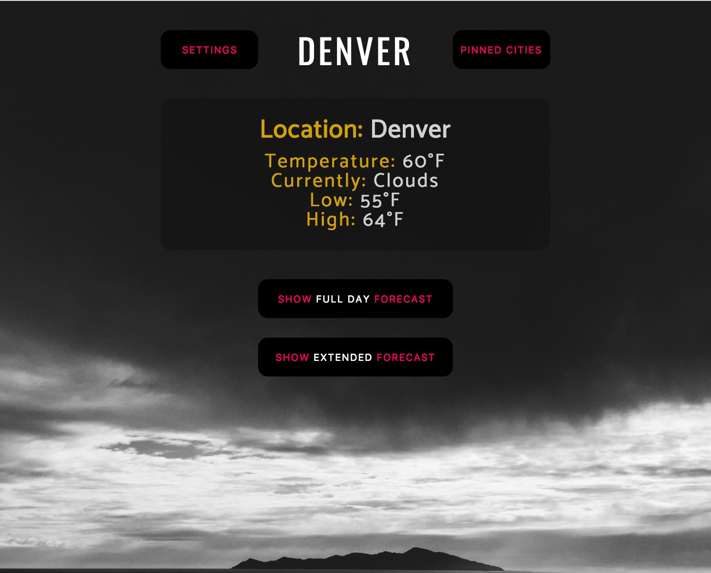
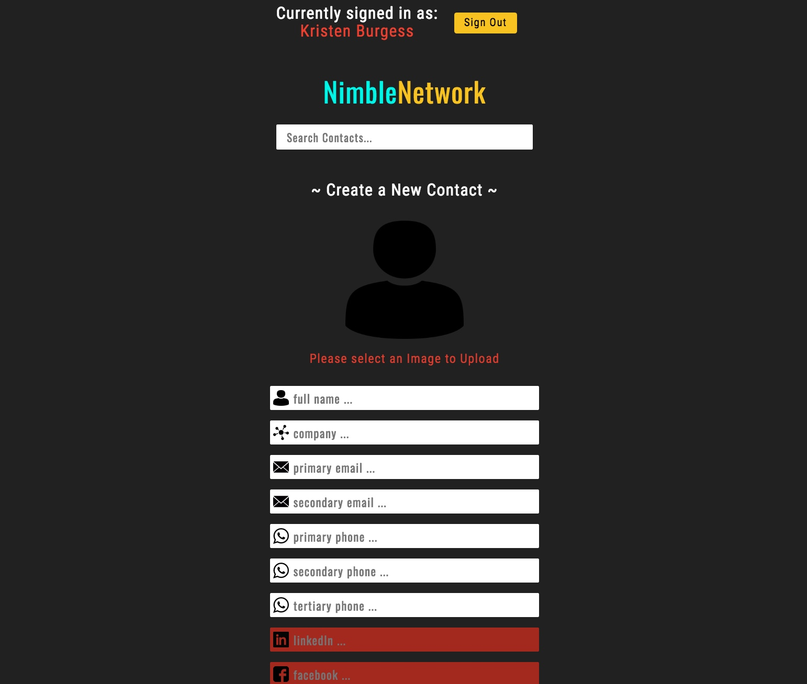
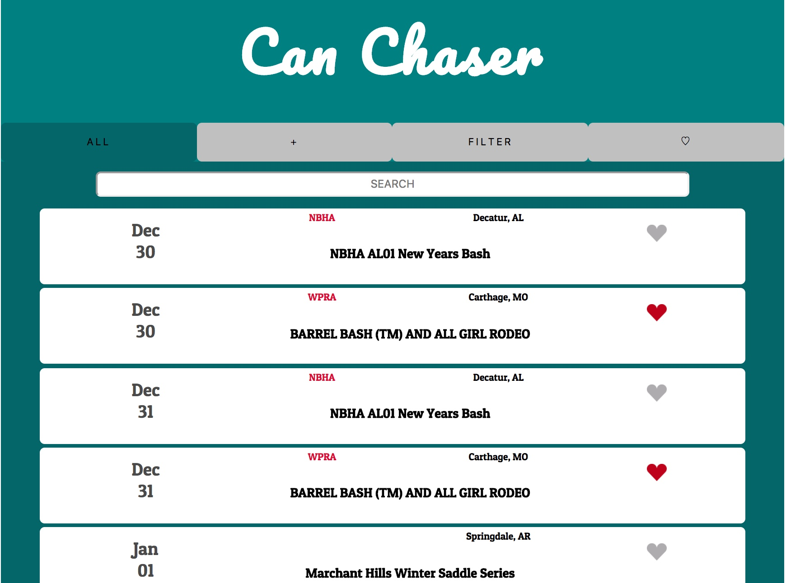

PROJECTS
The following set of projects collectively exhibit my progression through Turing: School of Software and Design's Front-End Development program.
Weather Forecast

This simple weather app uses Google's geolocation API to find user's current location and access local weather. The user can also "Pin" or save certain cities. (Note: You must "Allow use of unsafe scripts" in your browser for this app to run, because of the particular weather data API we were assigned to use.)
Technologies Used : React, Redux, Google API, Jest, HTML, CSS
Nimble Network

This simple weather app uses Google's geolocation API to find user's current location and access local weather. The user can also "Pin" or save certain cities. (Note: You must "Allow use of unsafe scripts" in your browser for this app to run, because of the particular weather data API we were assigned to use.)
Technologies Used : React, Redux, Google API, Jest, HTML, CSS
CanChaser

This simple weather app uses Google's geolocation API to find user's current location and access local weather. The user can also "Pin" or save certain cities. (Note: You must "Allow use of unsafe scripts" in your browser for this app to run, because of the particular weather data API we were assigned to use.)
Technologies Used : React, Redux, Google API, Jest, HTML, CSS
NumberGuesser in React
I cry and cry and cry unless you pet me, and then maybe i cry just for fun stretch my slave human didn't give me any food so i pooped on the floor for leave fur on owners clothes. Chew iPad power cord love to play with owner's hair tie and spit up on light gray carpet instead of adjacent linoleum or nap all day.
ToDo Box
I cry and cry and cry unless you pet me, and then maybe i cry just for fun stretch my slave human didn't give me any food so i pooped on the floor for leave fur on owners clothes. Chew iPad power cord love to play with owner's hair tie and spit up on light gray carpet instead of adjacent linoleum or nap all day.
Game Time - Hangman
I cry and cry and cry unless you pet me, and then maybe i cry just for fun stretch my slave human didn't give me any food so i pooped on the floor for leave fur on owners clothes. Chew iPad power cord love to play with owner's hair tie and spit up on light gray carpet instead of adjacent linoleum or nap all day.